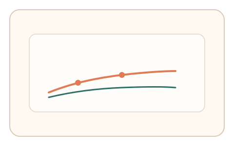
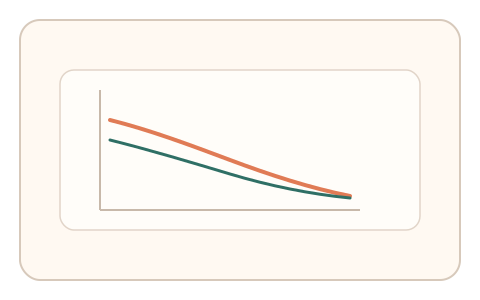

#14
生物肌肉与鼠标运动
已扩展
微疲劳漂移
通过 10–15 次微任务捕捉短时疲劳带来的精度与速度轻微退化。
概念原文
让用户完成一组 10-15 次微任务，观察精度与速度的轻微退化趋势。人体肌肉会在短时间内出现轻微漂移，而脚本往往保持恒定。
利用“短时疲劳漂移”作为真实用户特征。
研究背景
短时间连续动作可能引发轻微疲劳与运动控制波动，表现为精度下降或速度衰减趋势。利用这一微退化曲线，可区分脚本的恒定输出与真实用户的生理漂移。
核心机制
- 设置 10–15 次短微任务，节奏稳定。
- 记录每次任务的完成时间与偏差。
- 评估精度与速度是否出现轻微退化趋势。
- 容许波动，强调整体趋势而非单点表现。
用户流程
- 步骤 1：用户完成一组微任务序列。
- 步骤 2：系统记录每次任务的时间与精度。
- 步骤 3：系统计算退化趋势并判定。
判定信号
精度退化斜率
短时疲劳可能导致轻微精度下降。
完成时间微衰减或波动
真实用户会出现速度波动而非恒定输出。
判定逻辑
计算序列内精度与时间的趋势线，要求出现轻微退化或波动；完全恒定或完美直线判异常。
对抗面
- 脚本人为注入退化趋势
- 回放真实用户的完整序列
防御与缓解
- 随机化目标与任务顺序，降低回放价值
- 结合微抖动与反应时等信号进行交叉验证
- 对趋势过度线性或过度随机进行异常检测
可达性与风险
允许更短序列或降低任务强度，避免对体力或注意力有限用户造成负担。
- 用户状态良好时可能不出现明显退化
- 过长序列易引发反感与流失
可视化状态
状态 1：微任务序列
连续 10–15 次微任务构成短序列。

状态 2：轻微退化
精度与速度出现轻微下降趋势。

状态 3：趋势判定
基于趋势线与波动范围判断。
参考资料
Muscle fatigue
说明短时疲劳对运动表现的影响。
Motor variability
说明运动过程中的自然波动。